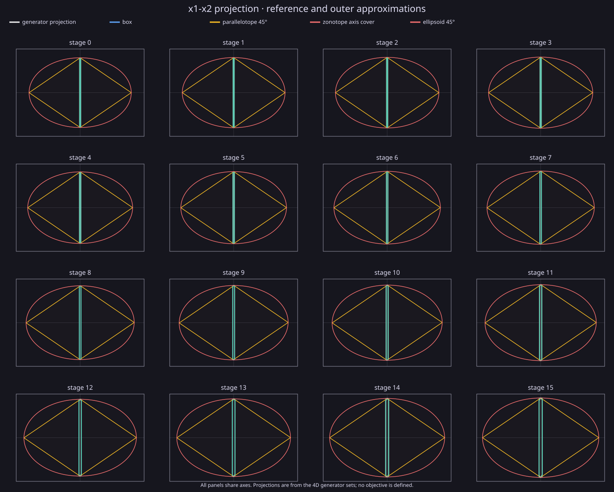
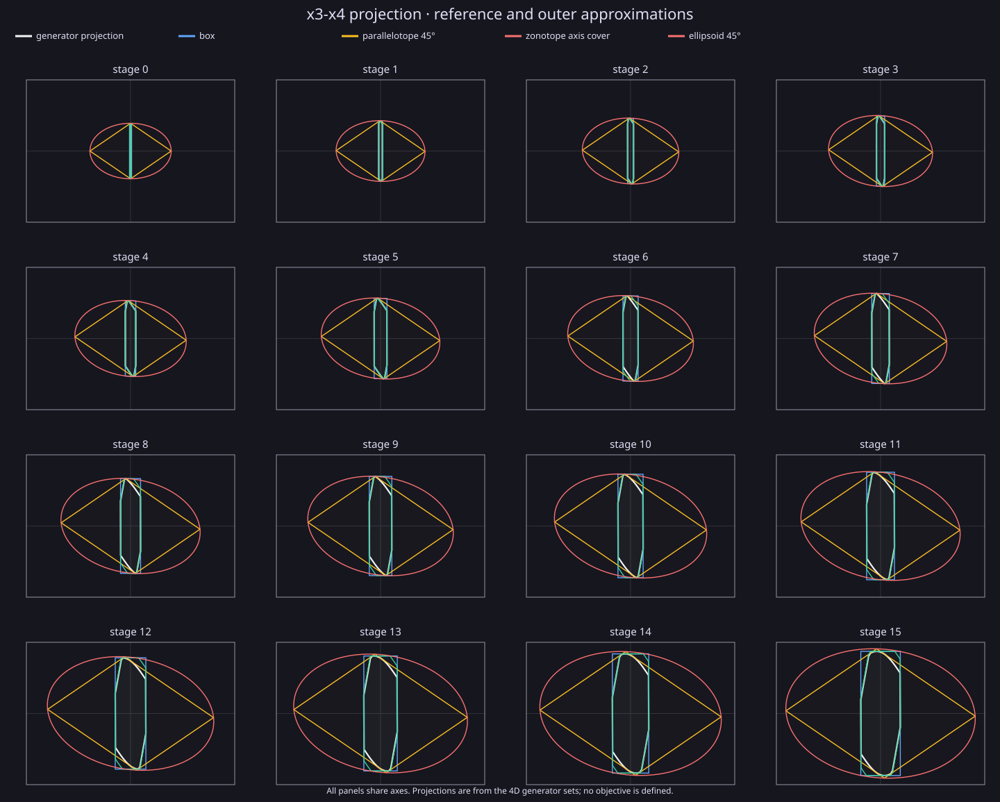

Saved native C++ run · four states · 15 transitions · 2 projections
How four outer approximations change the projected reachable sets
This report propagates the source-qualified four-state scalar-input model, then compares four registered outer approximation methods on the x1–x2 and x3–x4 projections at every stage. The input is an independent interval at each step. There is no objective, controller or second player in this model.
All stages, same axes




The reference is the computed polygon boundary of each projected stored generator set. Each colored boundary is an outer approximation admitted by its provider policy. The orientation of the parallelotope and ellipsoid is fixed at 45° for every stage; it is not fitted or optimized. The zonotope axis-cover output has a factor budget of 8.
Observed area and call-time ranges
Ranges below summarize the 32 projection-stage cases for each method. Area ratio is approximate output area divided by reference projection area. Time is the median of five alternating calls per case; the shown range is across those 32 case medians.
| Method | Area ratio range | Median call-time range | Admission basis |
|---|---|---|---|
| Axis-aligned box | 1.000–1.226 | 193–1,099 μs | V-to-H containment |
| Parallelotope, fixed 45° | 2.988–49.082 | 308–1,196 μs | V-to-H containment |
| Zonotope axis cover, budget 8 | 1.000–1.125 | 13–569 μs | Generator-axis cover |
| Directional ellipsoid, fixed 45° | 4.693–77.098 | 148–538 μs | V-to-ellipsoid containment |
Reading the numbers: the fixed-orientation shapes over-enclose the narrow initial projection substantially. This is evidence about these four policies, this model and these coordinate planes. Call times are descriptive observations on one unisolated development host, not a speed ranking: the measurement includes the registered provider and policy admission, excludes setup and drawing, and has no separate limiter profile.
Numerical scope
- The full four-state reachable-set propagation uses stored binary64 model data and retains all generator factors. The comparison projects that set before applying the 2D approximators.
- Each returned approximation passed its declared numerical admission policy. This does not establish validated real-arithmetic containment or certified rounding.
- Area comes from the resulting 2D boundaries; ellipsoid area uses its analytic area formula. Sampled support gaps in the raw CSV are diagnostics only and are not the admission proof.
- Five calls per method and projection-stage pair were interleaved in rotating order. Each call-time interval covers
run_registered, including provider execution and admission. Registry setup, input preparation, result extraction and rendering are outside the interval.
Reproduce and inspect the records
cmake -S . -B build/release -DCMAKE_BUILD_TYPE=Release -DBUILD_TESTING=OFF
cmake --build build/release --parallel 4
cmake --install build/release --prefix build/release/install
cmake -S examples -B build/examples -DCMAKE_BUILD_TYPE=Release -DCMAKE_PREFIX_PATH=build/release/install
cmake --build build/examples --target native_four_state_approximation
build/examples/native_four_state_approximation new-output-directoryPer-stage approximation areas and timings (CSV) · 64-direction support diagnostics (CSV) · Run manifest and file hashes (JSON) · Offline report bundle (ZIP)
Algorithm source: commit d4fb12413688db87e48797f148ce1d0e82d3c644. Model details and source qualification are in the four-state reachability lesson.